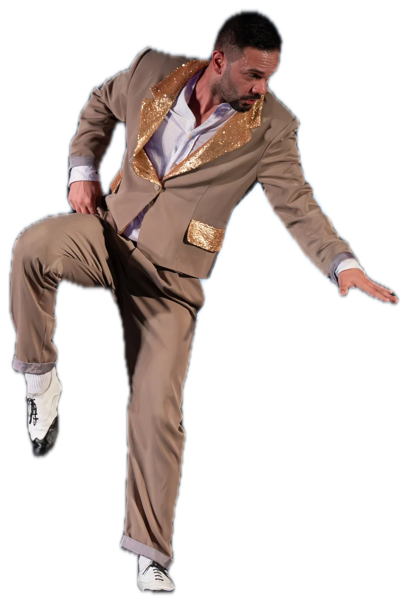
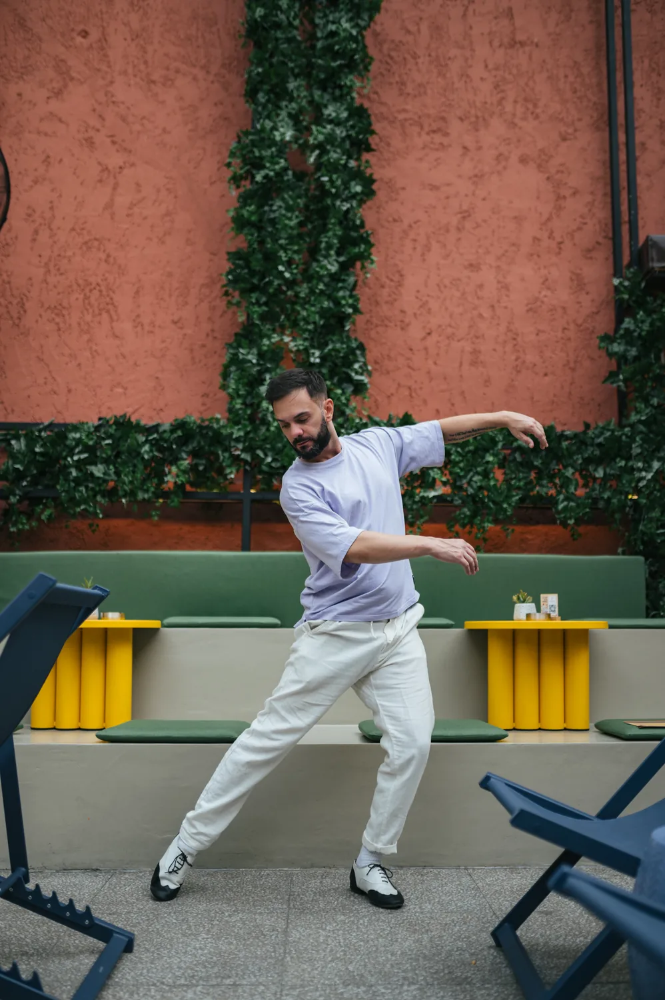

Become the Artist First
From the Hours to the Maestro
“Give lines, not rails.”
Teo IDT
Scroll
Foundation3 min
Feeling Needs a Road
Skill gives feeling somewhere to travel.
- Feeling is present from your first class.
- Listening, understanding and movement make it shareable.
- Practice matters. “10,000 hours” is shorthand—not a threshold or guarantee.
The number is an average from one study of violin students. It is not a rule.
Ericsson, Krampe and Tesch-Römer, 1993Where we are
Keep the feeling.
Build its road.
Listen + move3 min
Ear — Learning to Hear
Before choosing a movement, notice what the music gives you.
- Hear rhythm, instruments, phrasing and space—not only a count.
- The Ear gives the Brain something to understand.
- Movement also shapes listening: Ear and Body teach each other.
Try it
Listen to the conga.
Move side to side. Listen again.
“The clave doesn't change; the feeling changes.”
Tito PuenteUnderstanding3 min
Brain — Understanding What You Hear
Turn what you notice into a clear decision.
- Recognise structure rather than chase the next remembered figure.
- Connect what the Ear hears to what the Body can do.
- Understanding helps you recover when a plan stops working.
Eight counts. The clave plays on 2, 3, 5, 6-and, 8. The conga speaks with open tones on 4 and 8.
4 and 8 are open rings. That is The Breath: the pause stays alive.
Ask yourself
What am I hearing?
What choice does it support?
Movement demo4 min
Body — Understanding Becomes Movement
What you know must become something you can do.
- Embody timing, weight and connection—not just a shape.
- Let the arms follow the body instead of forcing decoration.
- Move, listen, adjust: the Body sends information back to the Ear.
Try it
Small side-to-side movement.
Keep rhythm and weight clear.
How you move can shape the beat you hear.
Phillips-Silver and Trainor · Science, 2005 · small studiesExpression3 min
Heart — Giving Feeling a Way Through
Feeling was already there. Now it has a clearer channel.
- Rhythm, understanding and embodiment support expression.
- Joy, energy or nostalgia can travel through your dancing.
- Heart leads into the artist’s work: Copy, Transform, Create.
“The body learns the movement so that the person has room to appear inside it.”
Teo IDT
Where we are
Not the start of emotion.
A way for it to reach someone.
The artist’s work3 min
Copy — A Starting Point
Learn the form without mistaking it for the destination.
- Copy a clear example to discover rhythm, weight and mechanics.
- First embody the movement. Then transform it.
- The teacher gives lines—not rails that trap every choice.
Where we are
Copy the form.
Find the principle inside it.
Other arts walk the same three steps. Shuhari is a Japanese model of learning, used in tea ceremony, Noh and the martial arts. “Imitate, assimilate, innovate” is a formula credited to trumpeter Clark Terry.
Explore4 min
Transform — Make It Your Own
What you learn passes through who you are.
- Adapt the form through your own body and understanding.
- Graham’s influence: your expression is unique—not borrowed personality.
- Explore only while rhythm, weight and connection stay clear.
“…because there is only one of you in all of time, this expression is unique.”
Martha Graham to Agnes de Mille, 1943, as de Mille tells it“When rhythm is clear, your body stops forcing. When your body relaxes, expression appears.”
Teo IDT
Try it
Shorten or prolong a movement.
What must remain connected?
Transmission3 min
Create — Passing Something On
The point is not novelty. It is meaningful expression.
- What you learned becomes something you can share.
- Your understanding and personality shape what reaches others.
- The artist already passes feeling on—Maestro is further along the road.
Ask yourself
What reaches your partner—
the shape, or the feeling?
An outside lens3 min
Tolstoy — Art Passes a Feeling On
A lens from What Is Art?—applied here to social dancing.
“Art is a human activity, consisting in this, that one man consciously, by means of certain external signs, hands on to others feelings he has lived through, and that other people are infected by these feelings, and also experience them.”
Leo Tolstoy · What Is Art?, chapter V · translation by Aylmer Maude- Art communicates a feeling from one person to another.
- Outward effects alone do not guarantee that feeling travels.
- Three conditions: individuality, clearness and sincerity.
Source lens
What Is Art? · V, XII, XV
Interpretation—not a scientific test.
Discuss4 min
Individuality, Clearness, Sincerity
Three lenses for the artist’s work—not three more stages.
- Individuality
- Feeling passes through your understanding and personality.
- Clearness
- Make the intention readable, not buried in complexity.
- Sincerity
- Communicate a feeling you genuinely have.
“Therefore this third condition—sincerity—is the most important of the three.”
Leo Tolstoy · What Is Art?, chapter XVDiscussion
When does a simple movement
say more than a complex one?
Subtle difference3 min
Chut-Chut — Just a Little Bit
A small difference can make the work come alive.
«Искусство начинается там, где начинается чуть-чуть»
“Art begins where the wee bit begins.”
Karl Bryullov, as Tolstoy tells it · What Is Art?, chapter XII- Tolstoy recounts Bryullov bringing a sketch alive with a few touches.
- In this teaching interpretation, the artist works for that subtle difference.
- The Maestro finds it effortlessly—not by adding more movement.
“The teaching of the schools stops there where the wee bit begins—consequently where art begins.”
Leo Tolstoy · What Is Art?, chapter XIIA school cannot hand you the little bit. A school can build the road to it: Ear, Brain, Body, Heart.
Try it
Same movement, a small change.
What makes the feeling clearer?
Further along3 min
Maestro — Beyond the Form
The same road, with less visible effort.
- In Teo’s frame, the Maestro’s understanding is deeply embodied.
- Others feel it through the dance, without an explanation.
- Others learn it when the thinking and preparation are made clear.
“A maestro teaches thinking. An artist teaches screaming. A maestro often teaches without words.”
Teo IDT
“…if one seeks the safety of rules, one will not get beyond competence.”
Stuart Dreyfus, 2004Where we are
Not a claim of superiority.
A standard for transmission.
Pause demo4 min
Ma — The Living Pause
The space between actions remains part of the work.
- A meaningful pause connects one action to the next.
- Students practise it through the Body, while learning the form.
- In this map, the Maestro lives in it effortlessly.
- Ma is not a breathing exercise or another name for The Breath.
The band stops here. Listen to the room.
“the moments of ‘no-action’ (senu tokoro) are the most enjoyable”
Spectators of Noh, as Zeami tells it · KakyōTry it
Hold a pause without disconnecting.
Let the next action grow from it.
Demonstrate + explain4 min
Others Feel It. Others Learn It.
Transmitting a feeling and teaching its thinking are different acts.
Others feel it
Feeling can pass directly through the experience of dancing.
Others learn it
Learning needs principles, preparation and clear decisions.
A useful demonstration reveals how—not just what to admire.
Compare
Watch it once.
Then hear the principle and try it.

Recap + discussion5 min
The Whole Map
A teaching map: train the channel, develop your expression, pass something on.
Solid gold: the pathDashed: influences—not extra stagesYou are here
The path goes from Ear to Brain, Body, Heart, Copy, Transform, Create and the Maestro. Ear and Body teach each other. Graham is an influence on Transform. Tolstoy gives Create three conditions: individuality, clearness and sincerity. Tolstoy also names the chut-chut. The artist works for it. The Maestro finds it effortlessly. The Body practises Ma, the living pause. The Maestro uses it effortlessly. Then others feel it, and others learn the thinking behind it.
Hear → Understand → Embody → Express. Copy → Transform → Create.
Teo’s road · Sofia
It started by accident
“I was training rugby at the time, walked past a party one night, saw people moving to music in a way that made me stop and stare. The next day I signed up for salsa lessons. I never went back to rugby.”
Teo IDT
Teo’s road · about eight years in
“I knew nothing.”
The line breaks here. Teo returns to the base: rhythm first, then the body. Rhythm & Body grows from this break.
“If we use the rhythm, melody will follow.
Teo IDT
If we learn body, movement will follow.”
Teo’s road · today
“Walk long so you can teach short.”
“After 23 years, I still consider myself a beginner. The method teaches humility and the constant search for knowledge — in body and in rhythm.”
Teo IDT
“Shoshin wasuru bekarazu.” Remember your original intention.
Zeami · Kakyō
The movement
Each student is an owner
“Latin Grow is a movement. When someone asks me if it is mine, the answer is that everyone who is going through the dance education ‘Rhythm and Body’ … is the owner and representative.”
Teo IDT
- 23+
- years of salsa community
- 2
- cities: Komotini, Alexandroupolis
- 1
- method: Rhythm & Body
Latin Grow · 23+ years
The masterpiece is people
“I would like my masterpiece to not be a dance or choreography but people.”
Teo IDT
Keep the feeling. Build its road.
What will you practise differently?
Teo IDT · Rhythm & Body · Latin Grow
latingrowgreece.comSources and notes
- Leo Tolstoy, What Is Art? (1897), translation by Aylmer Maude. Chapters V, XII and XV.
- Martha Graham to Agnes de Mille, 1943, as de Mille tells it in Martha (1991). It is a talk from memory, not a letter.
- Zeami, Kakyō. The two lines come from published English translations.
- Tito Puente, in Jim Payne’s Hall of Fame article for the Percussive Arts Society.
- Phillips-Silver and Trainor, Science 308 (2005). The studies are small.
- Ericsson, Krampe and Tesch-Römer, Psychological Review 100 (1993).
- Stuart Dreyfus, 2004, on the five stages of skill.
- Shuhari and “Imitate, assimilate, innovate” have no exact first source. The page says so.
- Teo IDT: the words in gold come from Teo’s own notes and from the Latin Grow site.
- The sounds: the conga, the campana and the bass are recordings from VCSL and VSCO 2 CE (Versilian Studios), D. Smolken and Lynx_5969 (Freesound). Each recording has the CC0 public-domain licence. The clave is a synthetic sound.
- The outside voices are a lens. They are an interpretation—not a scientific test.